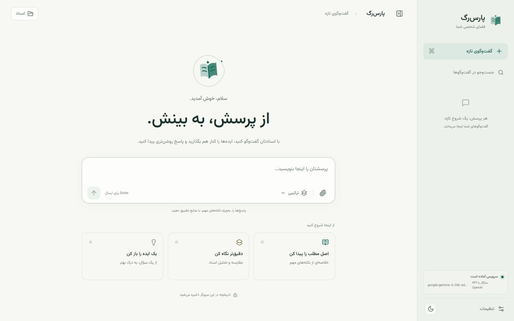
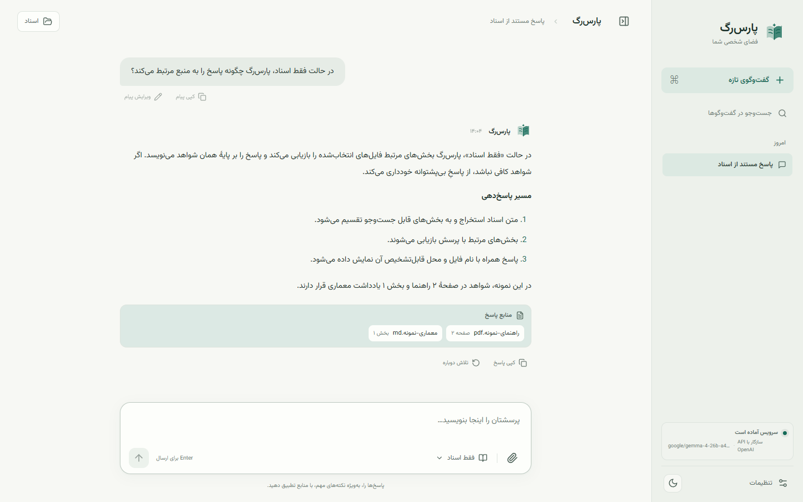
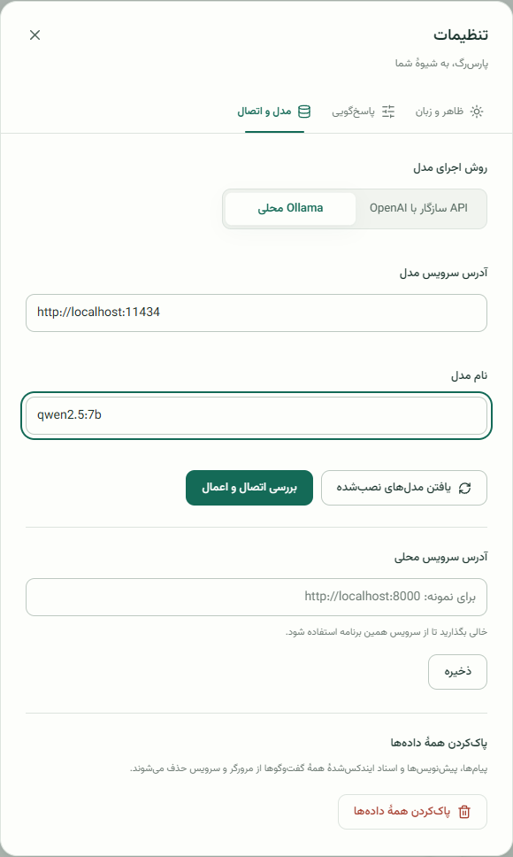

چت آفلاین با اسناد فارسی؛ RAG فارسی با مدل زبانی محلی
پارسرگ به پرسشهای شما درباره فایلهای PDF، Word و PowerPoint، صفحههای اسکنشده و متنهای فارسی و انگلیسی پاسخ میدهد و منبع هر پاسخ را نشان میدهد. استخراج متن، OCR، embedding و جستوجوی برداری روی سیستم شما انجام میشوند و پاسخ را مدل زبانی محلی با Ollama یا API انتخابی شما تولید میکند.

طراحیشده برای اسناد فارسی
متن راستبهچپ، OCR فارسی و embedding چندزبانه از ابتدا در طراحی دیده شدهاند.
پاسخ مستند و قابلردیابی
هر پاسخ نام فایل و صفحه، اسلاید، پاراگراف یا بخش منبع را نشان میدهد.
پشتیبانی گسترده از فایلها
PDF، DOCX، PPTX، تصاویر، Markdown، JSON، CSV، HTML، YAML، لاگ و کد منبع.
OCR در جای لازم
OCR فارسی و انگلیسی با Tesseract برای صفحههای اسکنشده، تصاویر و عکسهای داخل فایلهای Office.
محلی بهصورت پیشفرض
embeddingها و بردارهای Qdrant از سیستم خارج نمیشوند. استفاده از API بیرونی فقط با انتخاب و تأیید صریح شما ممکن است.
پرسش دقیق
با @ بخشی از پرسش را به فایل مشخصی محدود کنید و با / به دستورهای سریع دسترسی داشته باشید.
روی سختافزار شما
اجرای پیشفرض روی CPU و پشتیبانی از GPUهای NVIDIA و AMD با Docker Compose.
سه حالت پاسخدهی
تعیین کنید مدل تا چه اندازه از دانش خودش استفاده کند.
| حالت | بازیابی | دانش مدل | کاربرد |
|---|---|---|---|
| سختگیرانه (Strict) | الزامی، با آستانه شواهد | طبق قرارداد پرامپت کنار گذاشته میشود | پاسخهایی که باید فقط به اسناد متکی باشند |
| ترکیبی (Hybrid) | الزامی و رتبهبندیشده | میتواند شواهد را تکمیل کند | توضیح و جمعبندی با اولویت اسناد |
| فقط مدل (LLM-only) | انجام نمیشود | مستقیم استفاده میشود | گفتوگوی عمومی بدون اسناد |
رابط کاربری دوزبانه
یک فضای کاری به فارسی و انگلیسی، در حالت روشن و تیره.




شروع سریع با Docker
به Docker همراه Compose و بسته به مدل ۸ تا ۱۶ گیگابایت RAM نیاز دارید. راهنمای کامل، اجرای API، CPU، NVIDIA و AMD را پوشش میدهد.
git clone https://github.com/Pooria82/ParsRAG.git
cd ParsRAG
cp .env.example .env
docker compose --profile local-model up -d qdrant ollama
docker compose --profile local-model run --rm ollama-init
docker compose --profile local-model up -d --build appسپس http://127.0.0.1:8000 را باز کنید. راهنمای نصب، معماری و راهنمای داده و RAG را ببینید.